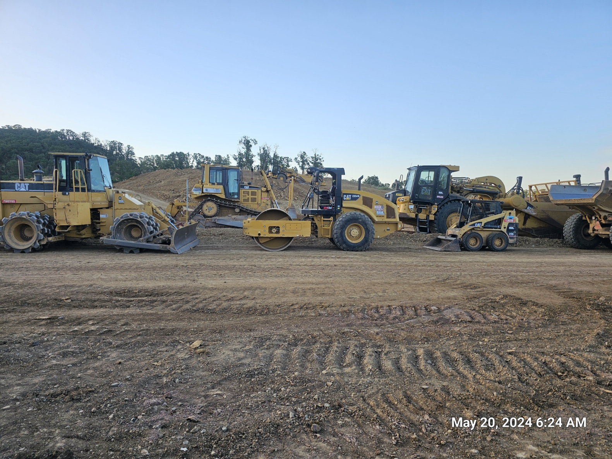

There is a long history behind heavy equipment dating back to
ancient Rome engineering.
The Roman treadwheel crane being one of the most important inventions at the time.
Powered by humans or animals and used by construction workers into the Middle Ages.
Animal, Steam and Diesel
In the 19th and early 20th Century heavy machines/equipment was designed to be powered by
Humans or animals. With the advancement of steam-powered engines the machine designs started to revolve
around it. Such as traction engine,
steam tractor,
and Steamroller.
With the invention of Internal-combustion engines(ICE)
the main source of power for heavy equipment engines became Kerosene and ethenol. Today the
Diesel engines dominate in the Heavy Equipment and mechanical transmissions in most equipment has been replaced by hydraulic/hydrostatic transmissions.
Construction Equipment Today

Lined up Machines/ Photo by: Me
Today new technology has been added to all types of machines.
They have integrated GPS, Back up cameras, and also side cameras.
Some also have bluetooth so that you can connect your phone to listen
to music or talk hands free. Here in California they have updated machines to be more
eco friendly as well. Recently Caterpillar(CAT) released a video of an operator operating heavy
equipment while sitting in an office and he was able to switch between machines
and operate as if he was sitting in the equipment chair.